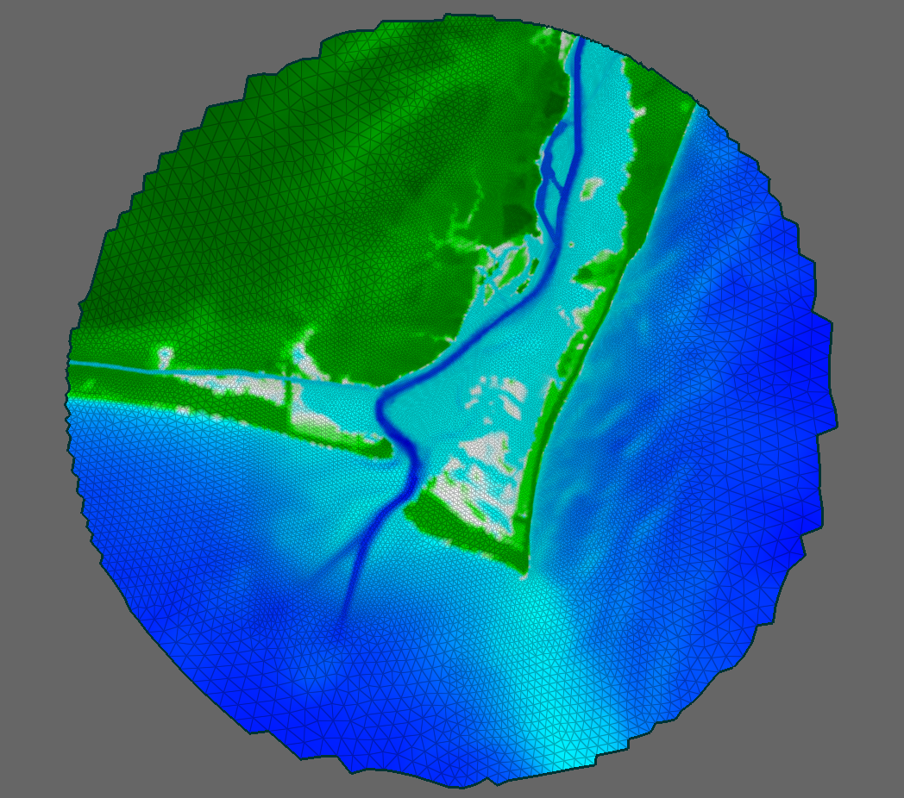
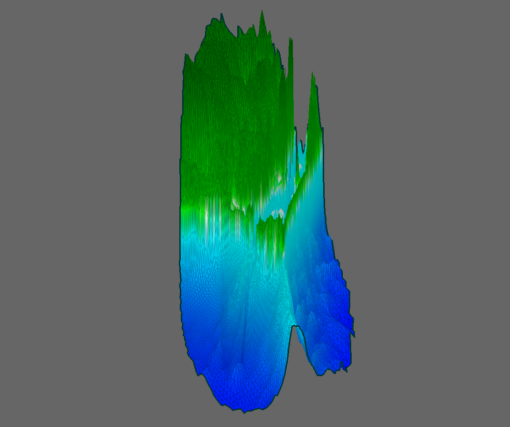

There seems to be a lot of confusion over how coordinate systems are used in ADCIRC.io, so I'm hoping to clear things up here. I think the easiest way to get a full understanding of how selections work in ADCIRC.io is going to be a step-by-step walkthrough, from reading the data to displaying the mesh to performing a selection. That way I can explain the bits and pieces of various code/libraries/3D concepts that are really necessary, as opposed to trying to learn Javascript/three.js/3D coordinate transformations all separately and then bringing them together. First I'll talk about how the data is read from the fort.14 file and transformed into a coordinate system that can be displayed. Then I'll show how the data is used in three.js to provide interactivity, and finally, I'll show how to get the coordinates (in the mesh's local coordinate system) of a click on screen.
First we'll look at how an ADCIRC mesh is displayed using three.js. As an example, we'll take a look at the following subdomain:
First, let's look at the bounding box of the mesh straight out of the fort.14 file:
A few things to note:
So, in order to render the mesh on screen, we want to do two things. First, we want to center the mesh around the coordinates (0, 0) so that it is centered on the screen. Second, we want to scale the x- and y- coordinates so that they are on the same scale as the z-coordinates. Without doing this scaling, when viewing the mesh from the side, it appears to be covered in extremely tall, narrow mountains, as shown in the following image:

The code that calculates the translation and scaling needed to properly display the mesh is found in
the /js/files/Fort14.js file. The following code snippet from that file shows the
finish_loading() function, which is called once the fort.14 file has been read
and the mesh data has been stored in a three.js mesh object.
this.finishLoading = function () {
// Everything's been loaded, so we need to calculate the mesh offset
// and apply it to everything that came from the mesh
var geometry = self.adcirc_mesh.geometry;
var mesh = self.adcirc_mesh.mesh;
// Calculate bounding box
var bbox = new THREE.Box3().setFromObject(mesh);
if (!!geometry && !!mesh) {
//// Calculate offset
var offset = geometry.boundingBox.center().negate();
offset.z = 0;
var offsetmatrix = new THREE.Matrix4().setPosition(offset);
//// Calculate an appropriate scaling factor for the x- and y- coordinates.
//// With ADCIRC data, x and y scales are typically much larger than z scales.
var horizontal_scale = 10 *
( geometry.boundingBox.max.z - geometry.boundingBox.min.z ) /
Math.min(geometry.boundingBox.max.x - geometry.boundingBox.min.x,
geometry.boundingBox.max.y - geometry.boundingBox.min.y);
//// Apply offset and scaling
self.setOffsetScale(offsetmatrix, horizontal_scale, 1);
//// Get the bounding box of the scaled geometry and emit event
boundingBoxEvent.bbox = new THREE.Box3().setFromObject(mesh);
console.log(boundingBoxEvent.bbox);
self.dispatchEvent(boundingBoxEvent);
}
};The important bits:
boundingBox.center() function returns the x-, y-, and z- coordinates of the
center of the bounding box as a THREE.Vector3 object, and the .negate()
function simply negates each one of the values. In line 236, we set the z-offset to zero because
we only want to move the mesh in the horizontal plane. The values of the offset vector for the
example mesh are:4xn matrix, where n is the total number of nodes. A
4x4 rotation matrix can be used to apply rotations and translations more easily than using
for loops. So, we put our translation values into a 4x4 matrix using the setPosition()
function that is part of a THREE.Matrix4 object.
1211.2570614530628
setOffsetScale() function. This is a function of the fort14 object, and the code
can also be found in the /js/files/Fort14.js file.
this.setOffsetScale = function ( offset, horizontal_scale, vertical_scale ) {
self.offset = offset;
self.horizontal_scale = horizontal_scale;
self.vertical_scale = vertical_scale;
self.adcirc_mesh.geometry.applyMatrix( offset );
self.adcirc_mesh.mesh.scale.set( horizontal_scale, horizontal_scale, vertical_scale );
for ( i=0, l=self.adcirc_mesh.open_segments.segments.length; i<l; ++i ) {
self.adcirc_mesh.open_segments.segments[i].geometry.applyMatrix( offset );
self.adcirc_mesh.open_segments.segments[i].line.scale.set( horizontal_scale, horizontal_scale, vertical_scale );
}
for ( var i=0, l=self.adcirc_mesh.land_segments.segments.length; i<l; ++i ) {
self.adcirc_mesh.land_segments.segments[i].geometry.applyMatrix( offset );
self.adcirc_mesh.land_segments.segments[i].line.scale.set( horizontal_scale, horizontal_scale, vertical_scale );
}
};
The inputs to this function are the offset matrix we created, the horizontal scaling factor we calculated, and a vertical scaling factor, which we'll just set to 1, since we don't want to change the vertical scale. The important lines here are:
Now that the mesh is scaled and translated, rendering of the mesh can be handled by three.js. Two
tutorials that you really should read are
Creating a Scene in three.js
and
Matrix Transformations in three.js.
The most important things to get out of those are that you render things by adding them to a scene,
and that every instance of an Object3d has a matrix which stores that object's position
relative to it's parent. It is also very important to know that the scenes that you add objects
to are also Object3d instances, and therefore have their own matrices.
So, knowing this, take a look at the /js/Managers/MeshManager.js file. It is reponsible
for creating Fort14 objects and adding them to the scene. Specifically, the following lines:
//// Create the mesh
self.mesh = new ADCIRC.Mesh( self.fort14Input.files[0] );
//// Add event listeners
// Handled
self.mesh.addEventListener( 'bbox', onBoundingBoxChange );
self.mesh.addEventListener( 'objectadded', onAddObject );
self.mesh.addEventListener( 'requestpaint', onRequestRepaint );
// Propagated
self.mesh.addEventListener( 'error', function( e ) { self.dispatchEvent( e ); } );
self.mesh.addEventListener( 'loadcomplete', function( e ) { self.dispatchEvent( e ); } );
self.mesh.addEventListener( 'loadprogress', function( e ) { self.dispatchEvent( e ); } );
self.mesh.addEventListener( 'loadstart', function( e ) { self.dispatchEvent( e ); } );
self.mesh.addEventListener( 'meshinfo', function( e ) { self.dispatchEvent( e ); } );
self.mesh.addEventListener( 'timeseriesinfo', function( e ) { self.dispatchEvent( e ); } );
//// Add the mesh to the scene
self.scene.add( self.mesh );
Two important lines:
self.scene object here is
a type of scene that I've created, called an OrbitScene.
Let's take a closer look at OrbitScene and how it is set up to render a mesh.
The OrbitScene object is reponsible for rendering the ADCIRC mesh and providing
interactivity. It allows the user to pan, rotate, and zoom around the mesh. Take a look at the
following code in /js/scenes/OrbitScene.js:
//// Create the camera
this.width = canvas.width();
this.height = canvas.height();
this.camera = new THREE.OrthographicCamera(
-canvas.width() / 2,
canvas.width() / 2,
canvas.height() / 2,
-canvas.height() / 2,
-1000000,
1000000
);
// Position the camera
this.camera.position.z = 1;
this.camera.up.set( 0, 0, 1 );
//// Create the scene Graph
this.tiltScene = new THREE.Scene();
this.rotateScene = new THREE.Scene();
this.panScene = new THREE.Scene();
this.rotateScene.add( this.panScene );
this.tiltScene.add( this.rotateScene );